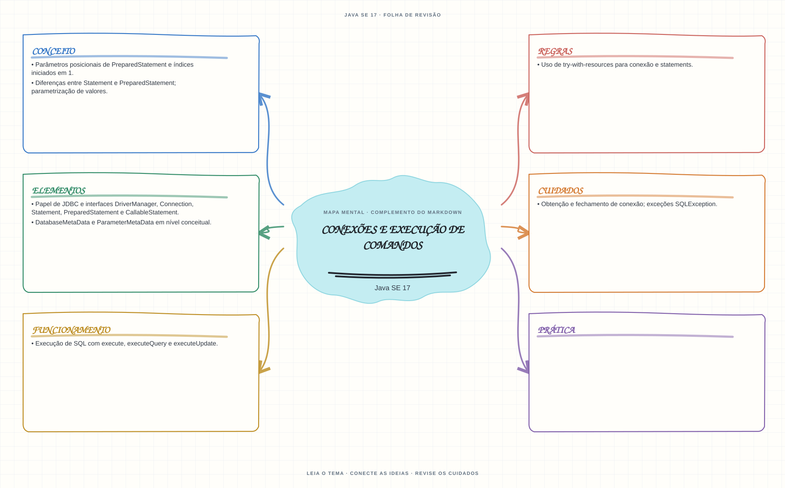

Ver mapa mental deste assuntoExecutar comandos JDBC com parâmetros e administrar conexões e statements como recursos.
Aprofundamento e revisão 1Z0-829: use esta página depois dos fundamentos. Os tópicos de prova complementam a trilha inicial e não são pré-requisitos para começar a programar.
Aprofundamento opcional: para executar a prática JDBC, configure um banco de teste, uma URL de conexão e o driver JDBC; não é necessário para concluir a trilha inicial.
- Leia o objetivo e localize a ideia principal no conteúdo abaixo.
- Preveja o resultado, compile e execute o exemplo.
- Faça a atividade sem copiar a solução e confira a checagem comentada.
EXEMPLO DE CONSOLE
Veja a regra em execução
Antes de executar, anote sua previsão. Compile o exemplo com o JDK e compare a saída observada com as regras deste assunto.
Comandos para compilar e executar
javac -d target/bin src/10-jdbc/conexoes-e-comandos/ConexoesEComandosExample.java
java -cp target/bin ConexoesEComandosExampleEste exemplo JDBC também precisa de uma URL de conexão e do driver do banco no classpath.
Consultar código-fonte: ConexoesEComandosExample.java
import java.sql.Connection;
import java.sql.DriverManager;
import java.sql.PreparedStatement;
import java.sql.ResultSet;
import java.sql.SQLException;
public class ConexoesEComandosExample {
public static void main(String[] args) throws SQLException {
System.out.println("=== JDBC: Connection, PreparedStatement e ResultSet ===");
if (args.length == 0) {
System.out.println("Uso: java ConexoesEComandosExample <jdbc-url>");
System.out.println("A URL e o driver dependem do banco utilizado.");
return;
}
String sql = "SELECT ?";
try (Connection conexao = DriverManager.getConnection(args[0]);
PreparedStatement comando = conexao.prepareStatement(sql)) {
comando.setInt(1, 42);
System.out.println("Conexao aberta; parametro JDBC ? preenchido com 42.");
try (ResultSet resultados = comando.executeQuery()) {
if (resultados.next()) {
System.out.println("next() posicionou o cursor; coluna 1: "
+ resultados.getInt(1));
}
}
}
}
}
PRATIQUE AGORA
Faça uma pequena alteração por conta própria
Com um banco de teste configurado, execute uma consulta parametrizada usando PreparedStatement.
Concluído quando: o programa compilar, produzir o resultado esperado e você conseguir explicar a regra aplicada.
CHECAGEM RÁPIDA · Conexões e execução de comandos
A partir de que índice são definidos os parâmetros de um PreparedStatement?
Conferir resposta comentada
A partir de 1. Prefira PreparedStatement com parâmetros para valores em vez de concatenar esses valores no SQL.
Estude
- Papel de JDBC e interfaces
DriverManager,Connection,Statement,PreparedStatementeCallableStatement. - Obtenção e fechamento de conexão; exceções
SQLException. - Execução de SQL com
execute,executeQueryeexecuteUpdate. - Parâmetros posicionais de
PreparedStatemente índices iniciados em 1. - Diferenças entre
StatementePreparedStatement; parametrização de valores. DatabaseMetaDataeParameterMetaDataem nível conceitual.- Uso de try-with-resources para conexão e statements.
Prática
Prepare uma consulta com parâmetros, execute-a e feche todos os recursos, inclusive quando ocorrer uma exceção.
Como este capítulo se relaciona com cada exame
Conceitos JDBC podem ser úteis; confirme se estão no escopo do exame escolhido.
Base de estudo deste portal; confirme o mapeamento com o blueprint vigente.
Conceitos úteis; confirme driver, APIs e objetivos do exame Java 21.
Orientação editorial sobre reaproveitamento do material; não representa objetivos oficiais nem garante cobertura do exame. Consulte o comparativo e as fontes da Oracle.